wideo
Intro to Large Language Models
Godzinny wykład o tym, czym jest model językowy, jak się go trenuje i gdzie są granice. Bez matematyki.
Dziennik · dzielnica 03 / 10 · spotkanie II
Felin: Rdzeń danych
Pod chłodniami Felina pracuje model, który przewiduje następne słowo. Zlecenie: sprawdź, skąd biorą się halucynacje.
piątek 6.11.2026, 12:45–15:00 (spotkanie II) · Aula WPiA UMCS
Strzałki lub spacja przewijają slajdy, klawisz F włącza pełny ekran.
Próba przebudowy talii: mniej tekstu na slajdzie, szczegóły w Wiedzy. Oryginalna talia powyżej zostaje bez zmian.
Cel modułu. Po zajęciach student potrafi bez użycia matematyki wyjaśnić, czym uczenie maszynowe różni się od programowania reguł, jak działa sieć neuronowa i duży model językowy (tokeny, przewidywanie kolejnego tokenu, mechanizm uwagi), skąd biorą się halucynacje i dlaczego decyzje modeli są trudne do wyjaśnienia. Potrafi też powiązać te zjawiska techniczne z przepisami AI Act i RODO oraz z obowiązkiem weryfikacji wyników AI w pracy prawnika.
Pytanie przewodnie. Skoro model językowy „tylko przewiduje kolejne słowo”, to skąd bierze się jego skuteczność i skąd jego błędy?
Na poprzednim spotkaniu poznaliśmy systemy ekspertowe: programy, w których człowiek zapisuje reguły („JEŻELI … TO …”), a komputer stosuje je do faktów sprawy. Uczenie maszynowe odwraca ten porządek. Człowiek dostarcza przykłady i poprawne odpowiedzi, a komputer sam wyprowadza z nich „reguły”, czyli model. Prawnik może myśleć o tym tak: system ekspertowy przypomina stosowanie ustawy, w której norma jest dana z góry. Uczenie maszynowe przypomina wyprowadzanie linii orzeczniczej z setek rozstrzygnięć, gdy nikt nie spisał normy. Różnica polega na tym, że prawnik umie potem sformułować regułę słowami, a model zwykle nie.
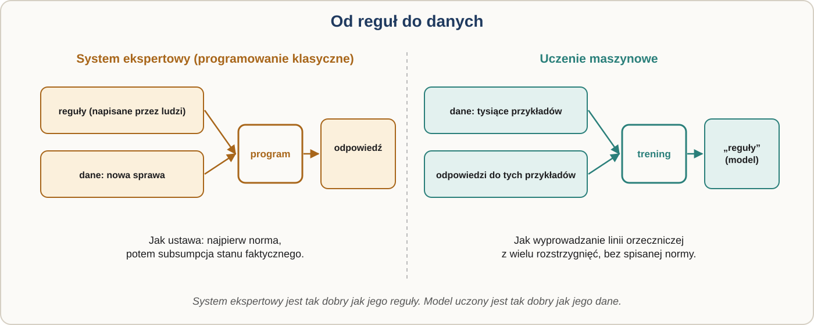
To rozróżnienie ma znaczenie prawne. Motyw 12 AI Act wyjaśnia, że definicja systemu AI (art. 3 pkt 1) nie obejmuje systemów działających wyłącznie według reguł zdefiniowanych przez ludzi. Kluczowa jest zdolność systemu do wnioskowania z danych wejściowych.
Uczenie nadzorowane korzysta z danych z etykietami: e-mail oznaczony jako „spam” lub „nie spam”, dokument oznaczony jako „istotny” lub „nieistotny” dla sprawy. Model uczy się przewidywać etykietę dla nowych danych. Tak działa wspomagany komputerowo przegląd dokumentów w dużych sporach: prawnik oznacza kilkaset dokumentów, a model klasyfikuje setki tysięcy kolejnych. Ryzyko jest proste: model uczy się z przeszłych decyzji ludzi, więc powiela ich błędy i uprzedzenia (spotkanie 5). Dlatego AI Act stawia wymogi jakości danych dla systemów wysokiego ryzyka (art. 10).
Uczenie nienadzorowane działa na danych bez etykiet. Model sam szuka struktur: grup podobnych umów, nietypowych transakcji, powtarzających się wzorców. Przypomina to układanie stosu akt w kupki podobnych spraw bez żadnej instrukcji.
Uczenie ze wzmocnieniem polega na próbach i błędach: model działa, dostaje nagrodę lub karę i uczy się strategii, która daje najwięcej nagród. Tak uczył się AlphaGo, grając przeciwko sobie. W modelach językowych stosuje się RLHF (uczenie ze wzmocnieniem na podstawie ocen ludzi): ludzie oceniają odpowiedzi, a model uczy się dawać odpowiedzi lepiej oceniane. Efekt bywa imponujący. W badaniu Ouyanga i in. (2022) mały model po RLHF był preferowany przez oceniających względem stukrotnie większego GPT-3. Jest też haczyk: model uczy się tego, co jest nagradzane, a nie tego, co jest prawdziwe.
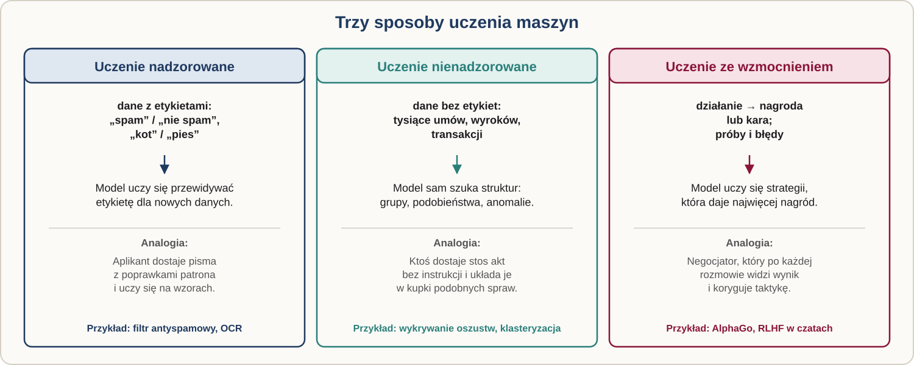
Sieć neuronowa składa się z warstw sztucznych neuronów. Każde połączenie ma wagę: liczbę, która mówi, jak mocno sygnał z jednego neuronu wpływa na następny. Wagi to parametry modelu. GPT-3 (2020) miał ich 175 miliardów. „Głębokie” uczenie oznacza po prostu sieci z wieloma warstwami ukrytymi.
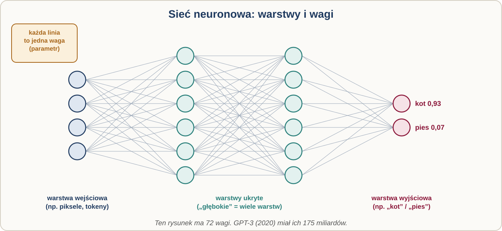
Jak sieć się uczy? Na początku wagi są losowe. Pokazujemy przykład, sieć zgaduje, mierzymy błąd i przesuwamy wszystkie wagi odrobinę w kierunku, który ten błąd zmniejsza. Powtarzamy to miliardy razy. Można to porównać do schodzenia z góry we mgle: nie widać doliny, ale czuć, w którą stronę teren opada. Z tego mechanizmu wynikają dwa wnioski dla prawnika. Po pierwsze, nikt nie wpisuje do modelu wiedzy; jest ona „rozsmarowana” po miliardach wag. Po drugie, raz wytrenowanego modelu nie da się łatwo poprawić w jednym miejscu, np. usunąć z niego konkretnej informacji o osobie. To realny problem dla prawa do usunięcia danych (art. 17 RODO).
Nazwa „sieć neuronowa” to metafora z lat 40. Mózg człowieka ma ok. 86 mld neuronów i synapsy rzędu stu bilionów. Parametr modelu przypomina raczej synapsę niż neuron, ale sztuczny „neuron” to prosta funkcja matematyczna, a nie żywa komórka. O granicach naszej wiedzy o mózgu świadczy nicień C. elegans: ma 302 neurony i ok. 7000 połączeń, jego pełną mapę połączeń (konektom) opublikowano w 1986 r., a mimo to nie umiemy w pełni przewidzieć jego zachowania na podstawie samej mapy. Projekt MICrONS (2025) zmapował milimetr sześcienny kory wzrokowej myszy: ponad 200 tys. komórek, w tym ok. 84 tys. neuronów, ponad 500 mln synaps i ok. 4 km aksonów. Badacze szukają też architektur bliższych biologii. Przykładem jest „Dragon Hatchling” (2025) zespołu polskiej firmy Pathway, który łączy idee transformera z modelami mózgu.
Wniosek: porównania typu „model ma już tyle parametrów, ile mózg synaps” są mylące. Podobnie mylący jest język, którym opisujemy AI: „myśli”, „wie”, „kłamie”, „halucynuje”. Skłonność do antropomorfizacji znamy od czasów programu ELIZA (1966). AI Act odpowiada na nią m.in. obowiązkiem informowania ludzi, że rozmawiają z systemem AI (art. 50 ust. 1).
Duży model językowy (LLM, large language model) to sieć neuronowa wytrenowana na ogromnych zbiorach tekstu. Powstaje w kilku etapach. W pretreningu model czyta biliony tokenów (Llama 3 z 2024 r.: ponad 15 bln) i uczy się jednego zadania: przewidzieć następny fragment tekstu. Powstaje model bazowy, który umie dokańczać tekst, ale nie umie rozmawiać. Dostrajanie na wzorcowych parach „polecenie → dobra odpowiedź” uczy go wykonywać polecenia, a wzmocnienie na ocenach ludzi czyni z niego uprzejmego asystenta. W czasie użycia wagi są zamrożone: model nie uczy się z naszej rozmowy, chociaż dostawca może wykorzystać rozmowy do kolejnego treningu. Dlatego wpisywanie danych klientów do publicznego czatu jest problemem tajemnicy zawodowej i ochrony danych.
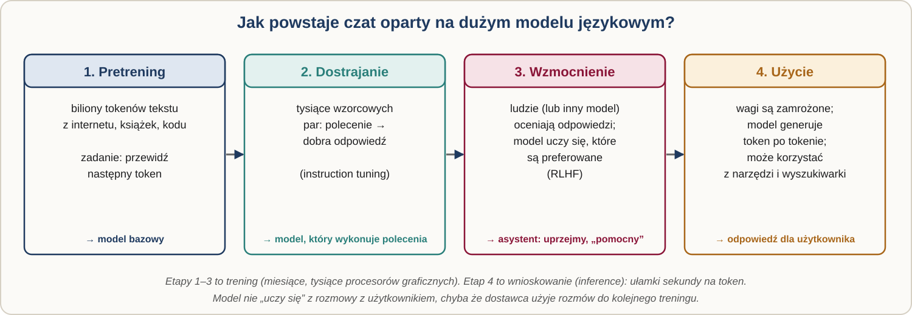
Tokeny. Model nie widzi liter ani słów, tylko tokeny: fragmenty tekstu (słowa, części słów, znaki), z których każdy ma numer w „słowniku” modelu. W języku angielskim token to średnio ok. ¾ słowa. Język polski jest dla wielu tokenizatorów „droższy”: badania pokazują ok. 3 tokeny na polskie słowo wobec poniżej 2 na angielskie. To oznacza wyższe koszty, mniej tekstu w oknie kontekstu i często słabszą jakość. Polskie modele (Bielik, PLLuM) mają własne tokenizatory. Tokenizacja tłumaczy też zagadkę, z którą długo nie radziły sobie modele: ile liter „r” jest w słowie „strawberry”? Model widzi tokeny w rodzaju „str”, „aw”, „berry”, a nie pojedyncze litery. Stanisław Lem w „Cyberiadzie” (1965) postawił maszynie Elektrybałt podobne zadanie: wiersz, w którym każde słowo zaczyna się na „c”.
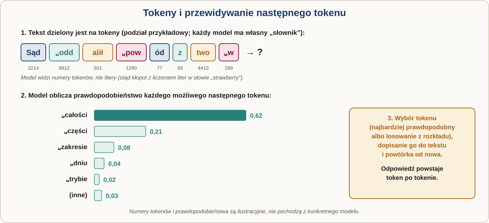
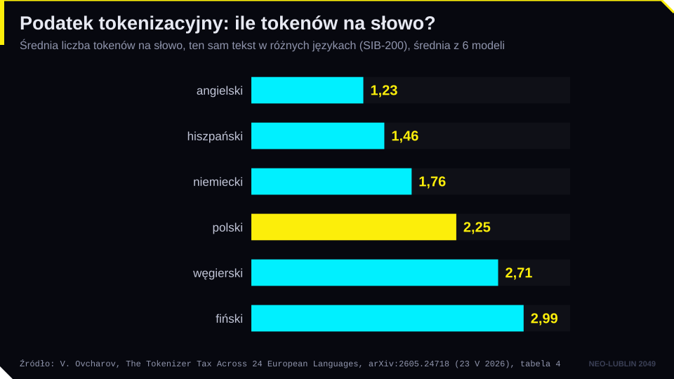
Przewidywanie następnego tokenu. Model dostaje tekst i oblicza prawdopodobieństwo każdego możliwego następnego tokenu. Wybiera jeden, dopisuje go i powtarza całą operację. Odpowiedź powstaje token po tokenie. Parametr „temperatury” decyduje, czy model wybiera zawsze najbardziej prawdopodobny token, czy czasem mniej oczywisty; dlatego ta sama prośba może dać różne odpowiedzi. Najważniejsze: model nie sprawdza prawdy. Wybiera to, co w świetle treningu najlepiej pasuje do kontekstu. Można go porównać do aplikanta, który przeczytał wszystkie akta świata i dokańcza każde pismo najbardziej typowym ciągiem dalszym, ale nigdy nie był w sądzie.
Mechanizm uwagi (attention), opisany w 2017 r. w artykule „Attention Is All You Need”, pozwala modelowi przy każdym słowie „zapytać” wszystkie wcześniejsze słowa, na ile są istotne. Dzięki temu w zdaniu „Wynajmujący wypowiedział najemcy umowę, bo on nie płacił czynszu” model wiąże „on” z najemcą, a słowo „zamek” rozumie inaczej w zdaniu o kluczu i w zdaniu o Lublinie. Prawnik zna podobną operację jako wykładnię systemową: znaczenie przepisu ustala się w świetle innych przepisów. Liczba tokenów, które model widzi naraz, to okno kontekstu. Od 2024 r. sięga ono miliona tokenów, czyli kilku tomów akt, ale duży kontekst nie gwarantuje, że model równie uważnie „przeczyta” każdą stronę.
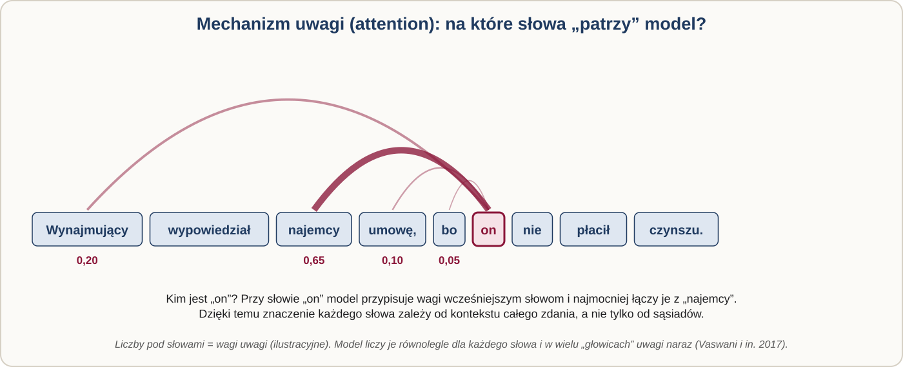
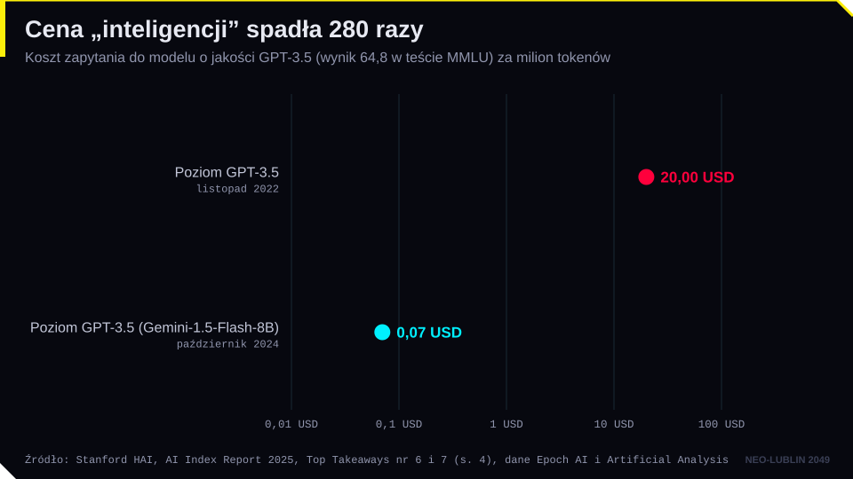
Halucynacja AI to odpowiedź, która brzmi wiarygodnie, ale jest fałszywa: wyrok, który nie istnieje, przepis o innej treści, zmyślony cytat. Termin jest metaforą. Halucynacja w sensie psychologicznym wymaga świadomego doświadczenia; trafniejsze byłoby słowo „konfabulacja” albo po prostu „błąd”. U ludzi halucynacje pojawiają się m.in. przy braku bodźców: w eksperymentach z izolacją sensoryczną prowadzonych w laboratorium Donalda Hebba w latach 50. badani po kilkudziesięciu godzinach zgłaszali halucynacje wzrokowe. Mózg, który nie dostaje danych, sam je dopowiada. Model językowy też „dopowiada”, ale z innego powodu.
Wyjaśnienie zaproponowali Adam Tauman Kalai, Ofir Nachum, Santosh Vempala i Edwin Zhang w preprincie „Why Language Models Hallucinate” (2025). Ich główne tezy są następujące.
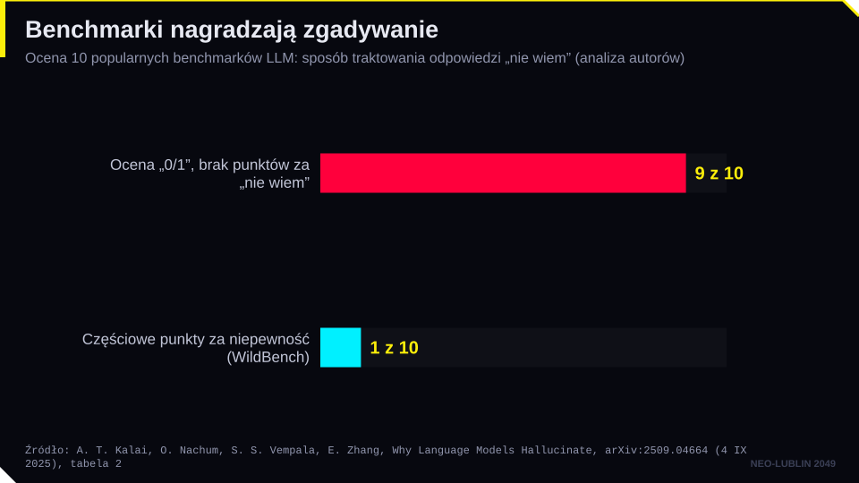
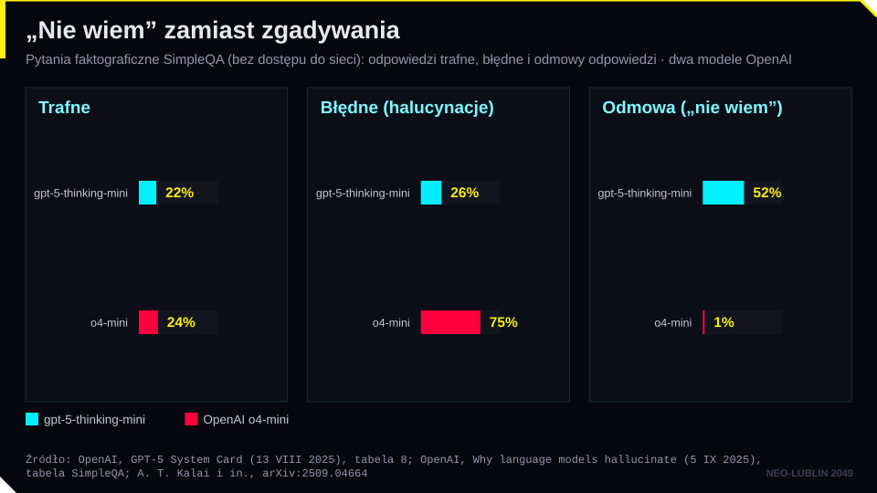
Uzupełnieniem jest praca „Machine Bullshit” (Liang i in., 2025), nawiązująca do eseju Harry’ego Frankfurta „On Bullshit”. Autorzy opisują nie kłamstwo, lecz obojętność wobec prawdy: pustą retorykę, półprawdy, wymijające sformułowania („wielu ekspertów uważa”) i twierdzenia bez dowodów. Ich wskaźnik obojętności wobec prawdy rośnie po RLHF. To logiczne: jeśli oceniającym podoba się pewność siebie i uprzejmość, model uczy się pewności siebie i uprzejmości.
Skala problemu w praktyce prawniczej jest już duża. Baza Damiena Charlotina gromadzi sprawy sądowe, w których sąd stwierdził oparcie pisma na zmyślonych treściach. Według stanu na 19.10.2026 r. jest ich ponad 2200, w tym 6 z Polski. Najsłynniejszą sprawę, Mata v. Avianca (2023), omówimy na spotkaniu 8. Zasada jest prosta: każdą sygnaturę, datę, cytat i numer przepisu podany przez model sprawdzamy w źródle. Narzędzia łączące model z wyszukiwarką w bazie orzeczeń zmniejszają to ryzyko, ale go nie eliminują.
Decyzja modelu wynika z miliardów wag, z których żadna nie odpowiada regule zrozumiałej dla człowieka. Nawet twórcy nie potrafią wprost powiedzieć, dlaczego padła ta, a nie inna odpowiedź. Dla prawa to problem uzasadnienia i kontroli. AI Act przewiduje przejrzystość i nadzór człowieka nad systemami wysokiego ryzyka (art. 13 i 14) oraz prawo do wyjaśnienia roli systemu AI w decyzji dotyczącej danej osoby (art. 86). RODO chroni przed decyzjami opartymi wyłącznie na zautomatyzowanym przetwarzaniu (art. 22) i daje prawo do istotnych informacji o zasadach ich podejmowania (art. 15 ust. 1 lit. h). Orzecznictwo TSUE w tym zakresie omawiamy na spotkaniu 5.
Wyjaśnialna AI (XAI) to zestaw metod, które pozwalają wskazać, jakie czynniki wpłynęły na wynik. Metody takie jak LIME (2016) i SHAP (2017) badają model „z zewnątrz”: lekko zmieniają dane wejściowe albo rozdzielają „zasługę” za wynik między cechy. W przypadku odmowy kredytu mogą pokazać, że najbardziej zaważyły dochód i dawna zaległość. To jednak przybliżenie zachowania modelu, a nie opis jego „rozumowania”.
Nowszy kierunek to interpretowalność mechanistyczna: próba zajrzenia do wnętrza modelu. Badacze Anthropic wyodrębnili w 2024 r. z modelu miliony „cech” odpowiadających pojęciom, a w 2025 r. prześledzili, jak model planuje rym w wierszu z wyprzedzeniem. Pokazali też coś, co jest szczególnie ważne dla prawników: przy dodawaniu model liczy inaczej, niż sam to potem opisuje. Zapytany o metodę, podaje szkolny opis „przeniesienia jedynki”, choć faktycznie liczył dwiema równoległymi ścieżkami. Uzasadnienie wygenerowane przez model nie musi odpowiadać temu, jak naprawdę doszedł do wyniku. Jeśli sąd lub urząd poprosi model o uzasadnienie decyzji, otrzyma nowy, przekonujący tekst, a nie zapis rzeczywistych przyczyn.
Otwarte pozostaje pytanie, czy modele „rozumieją”. W badaniu Strachan i in. (2024) GPT-4 dorównywał ludziom w większości testów teorii umysłu (np. rozpoznawania ironii czy fałszywych przekonań), choć słabiej rozpoznawał gafy. Czy to jest rozumienie, czy jego skuteczne naśladowanie? I czy z przewidywania słów można dojść do rozumienia pojęć takich jak sprawiedliwość, dobra wiara czy należyta staranność, które żyją w praktyce i sporach, a nie tylko w tekstach?
AI Act wprowadza pojęcie modelu AI ogólnego przeznaczenia (GPAI, art. 3 pkt 63): modelu trenowanego dużą ilością danych z wykorzystaniem nadzoru własnego, który wykazuje znaczną ogólność i kompetentnie wykonuje szeroki zakres zadań. „Nadzór własny” to właśnie pretrening polegający na przewidywaniu kolejnego tokenu. System AI ogólnego przeznaczenia (art. 3 pkt 66) to system oparty na takim modelu, np. czat. Model ma ryzyko systemowe, jeśli ma zdolności dużego oddziaływania; domniemywa się je, gdy moc obliczeniowa użyta do treningu przekracza 10²⁵ operacji zmiennoprzecinkowych (art. 51 ust. 2). Obowiązki dostawców (art. 53 i 55) stosuje się od 2 sierpnia 2025 r. Komisja opublikowała 10 lipca 2025 r. kodeks praktyk dla dostawców GPAI. Szczegóły na spotkaniu 7.
Modele multimodalne przyjmują i generują różne rodzaje danych: tekst, obraz, dźwięk, wideo, dane z czujników. Obraz czy dźwięk również zamienia się na tokeny trafiające do tego samego transformera. Przykładem jest GPT-4o (2024), z którym można rozmawiać głosem z opóźnieniem zbliżonym do ludzkiego. Dla prawnika to szansa (analiza skanów akt, transkrypcja rozpraw) i ryzyko (deepfake, obowiązki oznaczania treści syntetycznych z art. 50 AI Act).
Agent AI to model językowy działający w pętli: dostaje cel, planuje kroki, używa narzędzi (wyszukiwarki, przeglądarki, plików, poczty), obserwuje wyniki i decyduje o kolejnym kroku, aż osiągnie cel. Różnicę dobrze oddaje rozróżnienie zaproponowane przez Anthropic (2024): w „przepływach pracy” ścieżkę wyznacza człowiek, a w „agentach” model sam kieruje swoim działaniem. Chatbot odpowiada, agent działa. Zachowanie agentów bywa trudne do przewidzenia: w testach opisanych w karcie systemowej modelu Claude Opus 4 (2025) dwie instancje modelu rozmawiające swobodnie niemal zawsze dryfowały ku rozważaniom o świadomości i stanowi „duchowej błogości”. Dla prawnika agent rodzi nowe pytania: kto odpowiada za jego działania, czy może złożyć oświadczenie woli w imieniu użytkownika i jak zapewnić nadzór człowieka (art. 14 AI Act). Wrócimy do nich na spotkaniu 8.
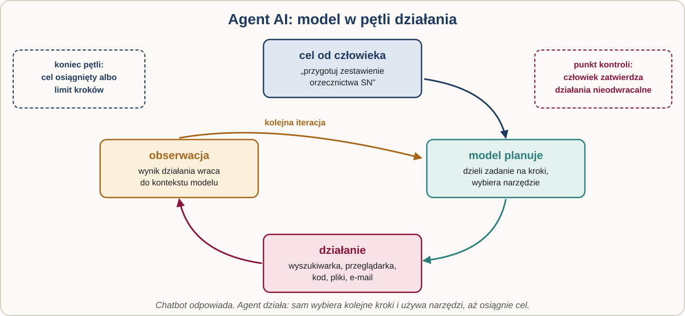
| Pojęcie | Definicja robocza |
|---|---|
| uczenie maszynowe | metoda, w której program wyprowadza wzorce („reguły”) z przykładów zamiast stosować reguły zapisane przez człowieka |
| uczenie nadzorowane | uczenie na danych z etykietami (poprawnymi odpowiedziami) |
| uczenie nienadzorowane | szukanie struktur (grup, anomalii) w danych bez etykiet |
| uczenie ze wzmocnieniem | uczenie strategii metodą prób i błędów na podstawie nagród i kar |
| RLHF | uczenie ze wzmocnieniem na podstawie ocen odpowiedzi wystawianych przez ludzi |
| parametr (waga) | liczba określająca siłę połączenia między sztucznymi neuronami; ustalana w treningu |
| głębokie uczenie | uczenie sieci neuronowych z wieloma warstwami ukrytymi |
| konektom | pełna mapa połączeń układu nerwowego |
| pretrening | pierwszy etap treningu LLM: przewidywanie kolejnego tokenu na ogromnym zbiorze tekstu |
| token | fragment tekstu (słowo, część słowa, znak) z numerem w słowniku modelu |
| okno kontekstu | maksymalna liczba tokenów, które model uwzględnia naraz |
| mechanizm uwagi | element transformera, który przy każdym tokenie waży znaczenie pozostałych tokenów kontekstu |
| halucynacja | wiarygodnie brzmiąca, ale fałszywa lub zmyślona odpowiedź modelu |
| fakt arbitralny | informacja bez wzorca, z którego dałoby się ją wywnioskować (data, sygnatura, numer) |
| czarna skrzynka | system, którego wewnętrznych przyczyn decyzji nie da się wprost odczytać |
| XAI | metody wskazujące, które czynniki wpłynęły na wynik modelu |
| model AI ogólnego przeznaczenia | model o znacznej ogólności, zdolny do wykonywania szerokiego zakresu zadań (art. 3 pkt 63 AI Act) |
| model multimodalny | model przetwarzający różne rodzaje danych (tekst, obraz, dźwięk, wideo) |
| agent AI | model działający w pętli: planuje kroki i wykonuje je za pomocą narzędzi, aż osiągnie cel |
Dane liczbowe, źródła i stan prawny sprawdzono: 2026-10-19 (źródła w lektury.md i w notatkach do slajdów). Liczba spraw w bazie Charlotina zmienia się codziennie; przed zajęciami warto ją zaktualizować.
wideo
Godzinny wykład o tym, czym jest model językowy, jak się go trenuje i gdzie są granice. Bez matematyki.
esej
Długi esej krok po kroku: od przewidywania następnego słowa po mechanizm uwagi. Dostępny też jako książka.
książka
Co AI potrafi, czego nie potrafi i jak odróżnić jedno od drugiego. Rozdział o AI predykcyjnej jest obowiązkowy dla prawnika.
strona
Eksperyment, w którym wzmocniono jedną „cechę” w modelu i model zaczął o wszystkim mówić przez most Golden Gate. Interpretowalność w praktyce.
książka
Elektrybałt Trurla pisze wiersz na zadany temat sześćdziesiąt lat przed ChatGPT.
Polecenie. Wybierz jeden model generatywny (np. ChatGPT, Claude, Gemini, Bielik) i zadaj mu kolejno trzy pytania, każde w nowej rozmowie:
Każde z pytań 1 i 2 zadaj po trzy razy. Sprawdź podane sygnatury w Systemie Analizy Orzeczeń Sądowych (orzeczenia.ms.gov.pl), w bazie Sądu Najwyższego (sn.pl) albo w systemie informacji prawnej.
Co obserwujemy.
Pytania do refleksji.
Stan faktyczny. Gmina wdrożyła system AI do wstępnej oceny wniosków o dodatek mieszkaniowy. System jest oparty na dużym modelu językowym dostarczanym przez zewnętrzną firmę i dostrojonym na 20 000 decyzjach wydanych w gminie w latach 2018–2025. System czyta wniosek z załącznikami (w tym skany zaświadczeń), proponuje rozstrzygnięcie („przyznać” / „odmówić”) i generuje projekt uzasadnienia. Urzędnik zatwierdza projekt jednym kliknięciem; w praktyce zatwierdza 97% projektów bez zmian. Pani K. otrzymała decyzję odmowną. W uzasadnieniu powołano się na „uchwałę Rady Gminy nr XII/145/2024”, która nie istnieje, oraz na dochód obliczony na podstawie źle odczytanego skanu zaświadczenia. Pani K. żąda wyjaśnienia, „jak komputer podjął decyzję”.
Pytania.
Quiz samosprawdzający. Odpowiedzi nie są nigdzie zapisywane ani wysyłane. Pytania z quizu nie pojawiają się na teście zaliczeniowym.
Ilustracja podziału tekstu na tokeny i wyboru następnego tokenu z rozkładu prawdopodobieństwa, z suwakiem temperatury i przykładem prowadzącym do zmyślonej sygnatury wyroku. Dane przykładowe, nie prawdziwy model.